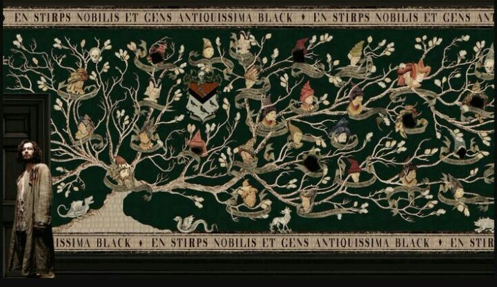
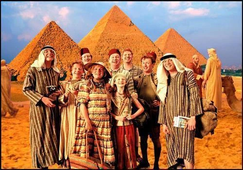
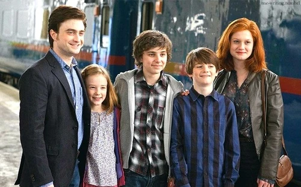
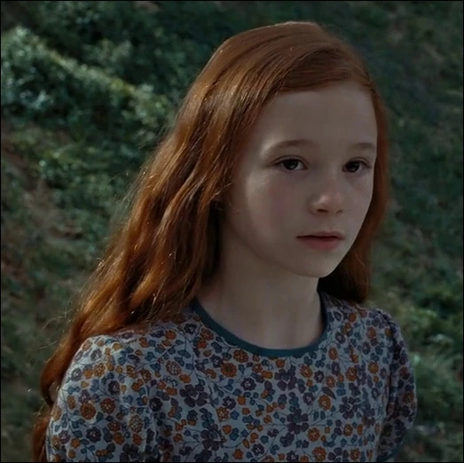

Los Sangre Pura son aquellos que mantienen una línea de ascendencia mágica "pura", libre de mestizaje o descendencia de padres no mágicos. Esta ideología, arraigada en la creencia en la superioridad de ciertas familias mágicas, ha sido históricamente promovida por aquellos que buscan preservar la pureza de la sangre y mantener una élite dentro de la sociedad mágica. Para ellos, la pureza de la sangre es un criterio fundamental para determinar el valor y el estatus de un individuo en la comunidad mágica.
En contraste, los traidores a la sangre desafían activamente esta ideología, rechazando la noción de superioridad basada en el linaje mágico y abogando por la igualdad y la inclusión en la sociedad mágica. Estos individuos, a menudo provenientes de familias de Sangre Pura, se oponen firmemente a la discriminación hacia los mestizos y los nacidos de padres no mágicos, promoviendo la idea de que el valor de un mago o bruja no debe depender de su ascendencia.

Los traidores a la sangre, como la familia Weasley, Sirius Black, Nymphadora Tonks y Hermione Granger, enfrentan la intolerancia y la discriminación dentro de sus propias familias y comunidades, desafiando las normas establecidas y defendiendo los derechos de todos los miembros de la comunidad mágica. Su activismo los lleva a luchar contra las leyes y políticas discriminatorias, así como a proteger a los nacidos de padres no mágicos y a los mestizos de la opresión y el prejuicio.
En la serie de Harry Potter, la tensión entre los Sangre Pura y los traidores a la sangre es un tema recurrente, reflejando los conflictos sociales y políticos presentes en la sociedad mágica. A través de la narrativa, se destaca la importancia del valor y la tolerancia, así como la necesidad de desafiar las injusticias y trabajar hacia un mundo mágico más inclusivo y equitativo.

Los mestizos en el mundo mágico de Harry Potter son aquellos individuos que tienen al menos un progenitor muggle (no mágico) y uno mágico. Esta mezcla de sangre entre personas no mágicas y aquellas con habilidades mágicas es vista por algunos como una disminución de la pureza de la sangre, mientras que otros la ven como una riqueza de diversidad y habilidades. Los mestizos enfrentan a menudo discriminación y prejuicios por parte de los puristas de la sangre, quienes consideran que su ascendencia muggle los hace inferiores. Sin embargo, muchos mestizos desafían estas percepciones y demuestran ser tan hábiles y valiosos como los magos y brujas de ascendencia pura.
Personajes destacados como Harry Potter y Severus Snape son mestizos en la serie de Harry Potter. A través de sus historias, se muestra cómo enfrentan los desafíos y la discriminación debido a su herencia mixta, pero también cómo demuestran su valía y contribuyen significativamente al mundo mágico. La inclusión de personajes mestizos en la narrativa de Harry Potter resalta la importancia de la diversidad y la aceptación en la sociedad, así como la idea de que el valor de una persona no debe estar determinado por su linaje mágico.

Los nacidos de muggles, también conocidos como nacidos de padres no mágicos, son individuos nacidos en familias sin ascendencia mágica. A menudo, enfrentan desafíos y discriminación en el mundo mágico debido a la percepción de que son menos dignos o talentosos que aquellos con sangre pura. Esta discriminación se manifiesta en diversas formas, desde actitudes condescendientes hasta políticas institucionales que limitan sus oportunidades dentro de la sociedad mágica. Sin embargo, a lo largo de la serie de Harry Potter, se destacan numerosos personajes nacidos de muggles que desafían estos prejuicios y demuestran su valía a través de su coraje, habilidades mágicas y contribuciones significativas al mundo mágico. Por ejemplo, Lily Evans Potter, madre de Harry Potter, era una poderosa bruja nacida de padres muggles cuya valentía y sacrificio fueron fundamentales en la derrota de Lord Voldemort. Del mismo modo, personajes como Hermione Granger, aunque nacida de padres no mágicos, destaca por su inteligencia, habilidades mágicas y dedicación a la lucha contra la oscuridad. Su papel en la serie destaca la importancia de la inclusión y la igualdad en la comunidad mágica, desafiando la noción de que el linaje mágico determina el valor de un individuo.